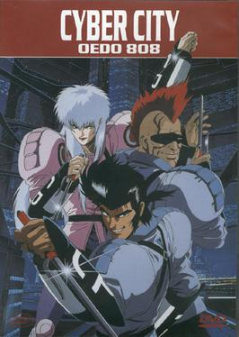

| Cyber City Oedo 808 | |
|---|---|
| Trailer | Original Poster |
|  | |
|
- Plot : Set in the year 2808 in the city of Oedo (Tokyo),
it tells the story of three criminals who are enlisted into fighting crime in exchange for reducing their sentences to the point where they are able to earn their freedom. The three criminals are Sengoku Shunsuke, an anti-social maverick, Gogl, a mohawk wearing hacker, and Benten, an androgynous bishōnen. - Episodes : 3 - Japenese title : サイバーシティ OEDO 808 - Genre : Cyberpunk - Directed by : Yoshiaki Kawajiri - Music by : Kazz Toyama (full OST > HERE) - Running time : 45min (x3) - Production : Madhouse animation studio - Release date : 21 June 1990 > 4 October 1991 |
|